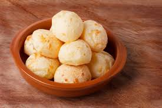

4 cheeses Chipa

Well known Paraguayan bread.
A simple bun called Chipa is the most common food staple in Paraguay. The famous bread is made with cassava starch, lard and anise. It originates from the Native American people Guarani, indigenous to the Amazon area of Paraguay, Brasil and Argentina.
Ingredients:
- 800 grams of manioc starch
- 3 eggs.
- 250 grams of butter.
- 350 grams of cheese (mix mozzarella, cheddar, parmesano and Sardo ).
- 1 cup milk.
- 1 teaspoon aniseed.
- 1 tablespoon of salt.
Steps:
- In a bowl place butter at room temperature and smashed with a fork.
- Add eggs one by one while stir.
- Add aniseed , all grated cheese , milk, salt and stir
- Slowly start adding starch and mix. When the dough has good consistency knead with your hands until all ingredients are well integrated and is homogeneous.
- Put butter to a tray, do shapes such as balls , hoops , ropes type or aligator.
- Take to an oven at 200 degrees for 20 minutes. When chipas begin to get golden brown, remove from oven and serve immediately. Bon Appetite!.
You can enjoy it with some coffee or just on its own.